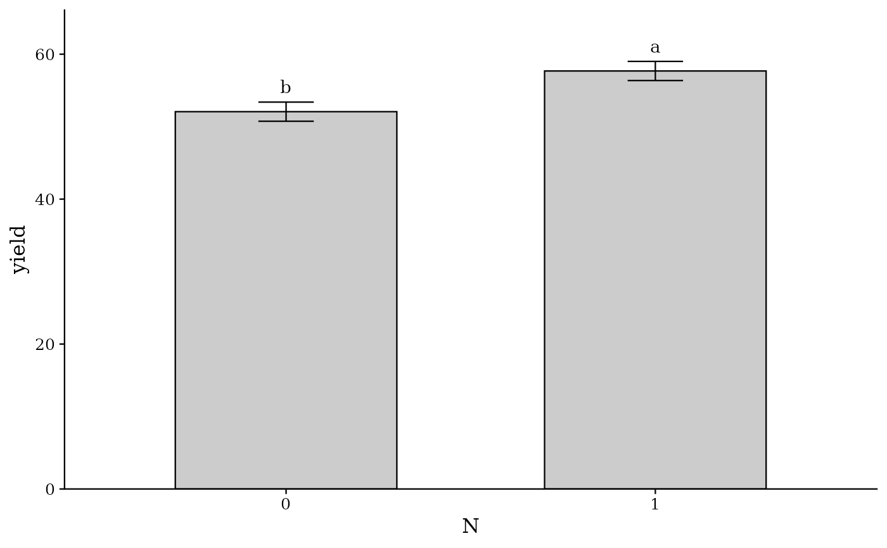
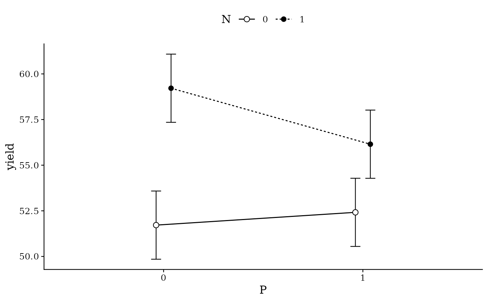
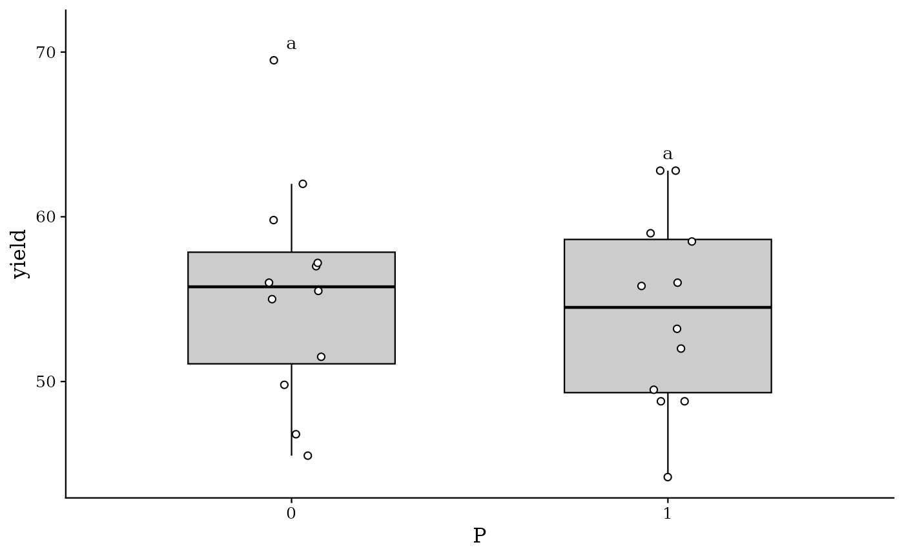
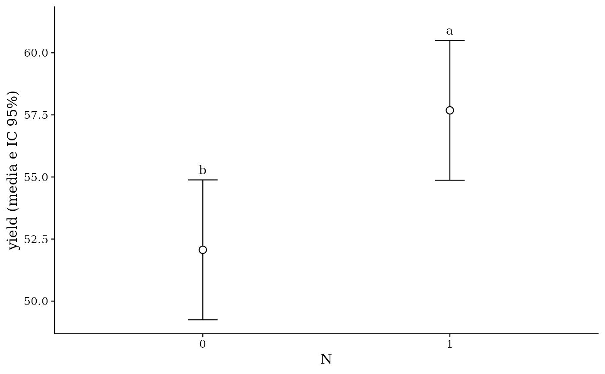
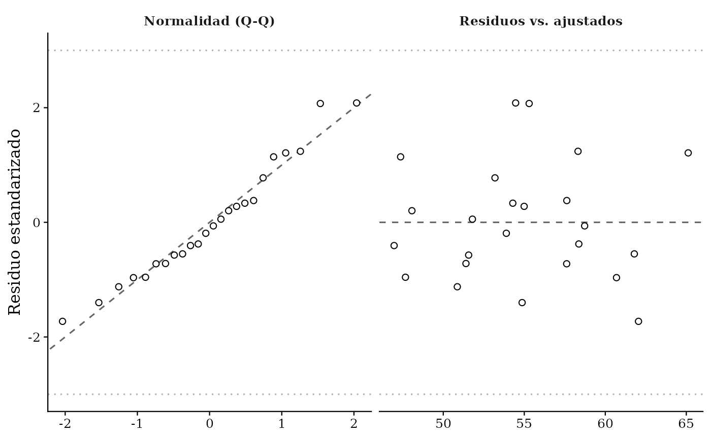
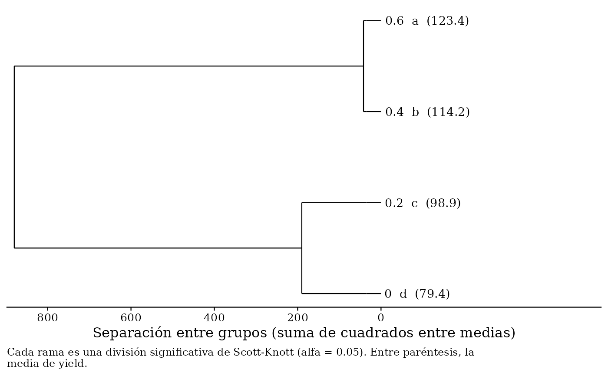

Grafica los resultados con un estilo listo para publicar: escala de grises, fuente con serifa, sin cuadrícula y con las letras de la comparación de medias. Devuelve un objeto 'ggplot2' que se puede seguir modificando.
Usage
# S3 method for class 'inkagro'
plot(
x,
comparacion = NULL,
tipo = c("barras", "puntos", "cajas", "interaccion", "regresion", "residuos",
"dendrograma"),
estilo = c("articulo", "color"),
color_barras = "#2E75B6",
color_relleno = "#BDD7EE",
fuente = "serif",
tamano = 12,
archivo = NULL,
ancho = 16,
alto = 10,
resolucion = 600,
...
)Arguments
- x
Objeto devuelto por [inkagro()].
- comparacion
Nombre o número de la comparación a graficar (ver `names(x$medias)`). Por defecto, la interacción si fue significativa; si no, el primer factor. Con `tipo = "regresion"`, nombre del factor cuantitativo (ver `names(x$regresion)`).
- tipo
Uno de:
- `"barras"`
Medias, error estándar y letras de la comparación.
- `"puntos"`
Medias con intervalo de confianza y letras; lo prefieren muchas revistas porque no esconde la escala.
- `"cajas"`
Distribución de los datos con las letras.
- `"interaccion"`
Medias de cada combinación (factorial y parcelas divididas).
- `"regresion"`
Curva dosis-respuesta para factores cuantitativos, con ecuación y R²; marca el máximo técnico si lo hay.
- `"residuos"`
Diagnóstico: gráfico cuantil-cuantil y residuos frente a valores ajustados.
- `"dendrograma"`
Árbol de Scott-Knott: cada rama es una división significativa de las medias y las hojas llevan su grupo. Útil con muchos tratamientos. Si el análisis usó otra prueba, el árbol se calcula con Scott-Knott solo para el gráfico.
- estilo
`"articulo"` (escala de grises, por defecto) o `"color"`.
- color_barras, color_relleno
Colores de borde y relleno cuando `estilo = "color"`.
- fuente
Familia tipográfica: `"serif"` (Times en la mayoría de sistemas, por defecto), `"sans"` o el nombre de una fuente instalada.
- tamano
Tamaño base del texto en puntos.
- archivo
Ruta opcional para guardar el gráfico (`.png`, `.pdf`, `.tiff`, `.jpg`). Si es `NULL` no se guarda nada.
- ancho, alto
Tamaño en centímetros al guardar. Por defecto 16 x 10, el ancho de una columna de página A4 con márgenes.
- resolucion
Resolución en puntos por pulgada al guardar.
- ...
No se usa.
Examples
res <- inkagro(npk, "yield", "N", factor_b = "P", bloque = "block",
diseno = "factorial")
plot(res)

plot(res, tipo = "interaccion")

plot(res, comparacion = "P", tipo = "cajas")

plot(res, tipo = "puntos")

plot(res, tipo = "residuos")

# Factor cuantitativo: curva dosis-respuesta
if (requireNamespace("nlme", quietly = TRUE)) {
avena <- inkagro(as.data.frame(nlme::Oats), "yield", "Variety",
factor_b = "nitro", bloque = "Block",
diseno = "parcelas_divididas")
plot(avena, tipo = "regresion")
plot(avena, comparacion = "nitro", tipo = "dendrograma")
}
